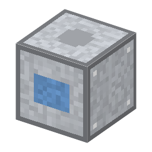

冷凍機（アンモニア圧縮式）
Refrigerating Machine (ammonia compression)・ブロック・Agriculture
仮（まだ本物どおりでない所がある）
本当の歴史：[11-13] 冷蔵・冷凍（1876年）

説明
①子ども 電気で動かして、水を凍らせる機械。冷蔵庫やエアコンの仲間。
②学生 圧縮機＋銅×2＋鉄×6。電気 1kW・20秒。冷媒の入口にアンモニア水を1つ（減らない）、水バケツ → 氷（バケツは戻る）。
③大人 1876年、ドイツのリンデはアンモニアを使う圧縮式の冷凍機を作り、ビール工場で冬でなくても冷やせるようになった。リンデはのちに空気を液化して酸素と窒素を分けた（[6-07] 空気分離）。
④ガチ 圧縮すると熱くなった冷媒を外で冷やして液にし、細い所から一気に広げると蒸発してまわりの熱をうばう。熱を低い所から高い所へ運ぶので「ヒートポンプ」とも言う。半導体工場の空調・恒温（[12-12]・[8-07]）も、この仕組みで温度をそろえる。